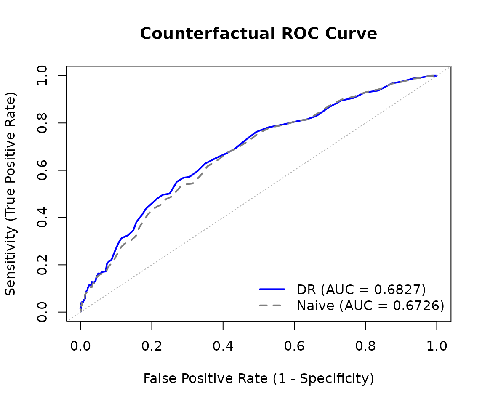
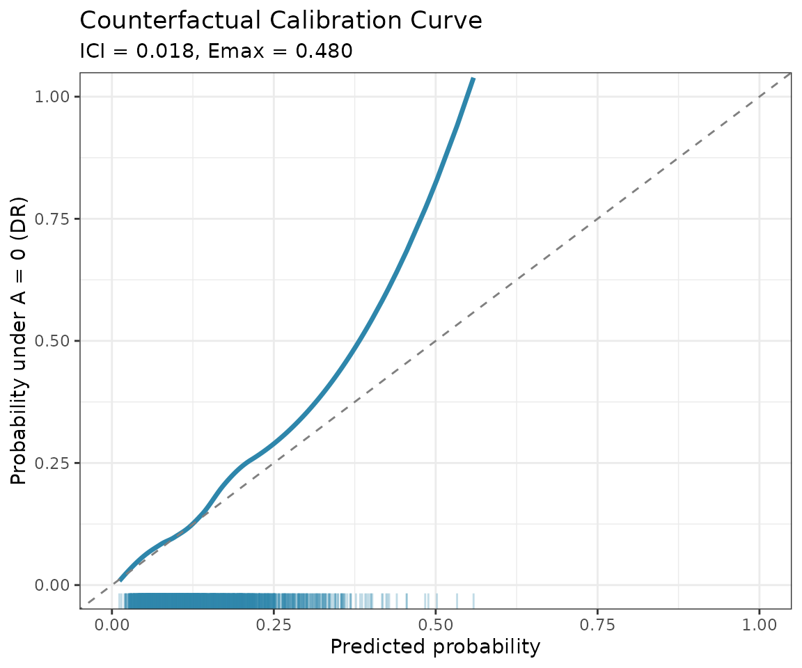

Introduction to cfperformance
Christopher Boyer, Issa Dahabreh, Jon Steingrimsson
2026-01-28
Source:vignettes/introduction.Rmd
introduction.RmdOverview
The cfperformance package provides methods for
estimating prediction model performance under hypothetical
(counterfactual) interventions. This is essential when:
Prediction models will be deployed in settings where treatment policies differ from training - A model trained on patients who received a mixture of treatments may perform differently when deployed where everyone receives a specific treatment.
Predictions support treatment decisions - When predictions inform who should receive treatment, naive performance estimates conflate model accuracy with treatment effects.
The methods implemented here are based on Boyer, Dahabreh & Steingrimsson (2025), “Estimating and evaluating counterfactual prediction models,” Statistics in Medicine, 44(23-24), e70287. doi:10.1002/sim.70287
Installation
# Install from GitHub
# install.packages("devtools")
devtools::install_github("boyercb/cfperformance")Quick Start
# Load the included example dataset
data(cvd_sim)
head(cvd_sim)
#> age bp chol treatment event risk_score
#> 1 -0.2078913 -0.43879526 -0.5697974 0 0 0.07548152
#> 2 -1.2517361 1.30171507 0.7798967 0 0 0.13491154
#> 3 1.7957878 -0.39076092 -0.1731313 1 0 0.18333022
#> 4 -1.2464064 0.08506276 0.0269594 1 0 0.07145644
#> 5 -0.5880067 0.10358176 0.8346190 1 0 0.11730651
#> 6 -0.9132198 0.88158838 0.6061392 0 0 0.12684642The cvd_sim dataset contains simulated cardiovascular
data with:
-
age,bp,chol: Patient covariates
-
treatment: Binary treatment indicator (confounded by covariates) -
event: Binary outcome (cardiovascular event) -
risk_score: Pre-computed predictions from a logistic regression model
Estimating Counterfactual MSE
Now we can estimate how well the model would perform if everyone were
untreated (treatment_level = 0):
# Estimate MSE under counterfactual "no treatment" policy
mse_result <- cf_mse(
predictions = cvd_sim$risk_score,
outcomes = cvd_sim$event,
treatment = cvd_sim$treatment,
covariates = cvd_sim[, c("age", "bp", "chol")],
treatment_level = 0,
estimator = "dr" # doubly robust estimator
)
mse_result
#>
#> Counterfactual MSE Estimation
#> ----------------------------------------
#> Estimator: dr
#> Treatment level: 0
#> N observations: 2500
#>
#> Estimate: 0.1186 (SE: 0.0062 )
#> 95% CI: [0.1072, 0.1303]
#>
#> Naive estimate: 0.1086The doubly robust estimator adjusts for confounding using both a propensity score model and an outcome model, providing consistent estimates even if one model is misspecified.
Comparing Estimators
Let’s compare all available estimators:
estimators <- c("naive", "cl", "ipw", "dr")
results <- sapply(estimators, function(est) {
cf_mse(
predictions = cvd_sim$risk_score,
outcomes = cvd_sim$event,
treatment = cvd_sim$treatment,
covariates = cvd_sim[, c("age", "bp", "chol")],
treatment_level = 0,
estimator = est
)$estimate
})
names(results) <- estimators
round(results, 4)
#> naive cl ipw dr
#> 0.1086 0.1190 0.1192 0.1186- naive: Simply computes MSE on the subset with the target treatment level. Biased when treatment is confounded.
- cl (Conditional Loss): Models the outcome and integrates over the covariate distribution.
- ipw (Inverse Probability Weighting): Reweights observations to mimic the counterfactual population.
- dr (Doubly Robust): Combines outcome modeling and IPW; consistent if either model is correct.
Estimating Counterfactual AUC
For discrimination (AUC), we can use similar methods:
auc_result <- cf_auc(
predictions = cvd_sim$risk_score,
outcomes = cvd_sim$event,
treatment = cvd_sim$treatment,
covariates = cvd_sim[, c("age", "bp", "chol")],
treatment_level = 0,
estimator = "dr"
)
auc_result
#>
#> Counterfactual AUC Estimation
#> ----------------------------------------
#> Estimator: dr
#> Treatment level: 0
#> N observations: 2500
#>
#> Estimate: 0.682 (SE: 0.0209 )
#> 95% CI: [0.6444, 0.725]
#>
#> Naive estimate: 0.6729ROC Curve
We can also visualize the full ROC curve, which shows the tradeoff between sensitivity (true positive rate) and 1-specificity (false positive rate) across all classification thresholds:
roc_result <- cf_roc(
predictions = cvd_sim$risk_score,
outcomes = cvd_sim$event,
treatment = cvd_sim$treatment,
covariates = cvd_sim[, c("age", "bp", "chol")],
treatment_level = 0,
estimator = "dr",
include_naive = TRUE
)
# Plot the ROC curve
plot(roc_result)
The ROC curve data can also be extracted as a data frame for custom plotting:
roc_df <- as.data.frame(roc_result)
head(roc_df)
#> threshold fpr sensitivity specificity type
#> 1 0.000 1.0000000 1.000000 0.0000000000 adjusted
#> 2 0.005 1.0000000 1.000000 0.0000000000 adjusted
#> 3 0.010 1.0000000 1.000000 0.0000000000 adjusted
#> 4 0.015 0.9990597 1.000008 0.0009403139 adjusted
#> 5 0.020 0.9985887 1.000017 0.0014112567 adjusted
#> 6 0.025 0.9957604 1.000083 0.0042395558 adjustedBootstrap Standard Errors
Both functions support bootstrap standard errors:
mse_with_se <- cf_mse(
predictions = cvd_sim$risk_score,
outcomes = cvd_sim$event,
treatment = cvd_sim$treatment,
covariates = cvd_sim[, c("age", "bp", "chol")],
treatment_level = 0,
estimator = "dr",
se_method = "bootstrap",
n_boot = 200
)
mse_with_se
#>
#> Counterfactual MSE Estimation
#> ----------------------------------------
#> Estimator: dr
#> Treatment level: 0
#> N observations: 2500
#>
#> Estimate: 0.1186 (SE: 0.0064 )
#> 95% CI: [0.1068, 0.1317]
#>
#> Naive estimate: 0.1086Calibration Curves
The package also supports counterfactual calibration assessment:
cal_result <- cf_calibration(
predictions = cvd_sim$risk_score,
outcomes = cvd_sim$event,
treatment = cvd_sim$treatment,
covariates = cvd_sim[, c("age", "bp", "chol")],
treatment_level = 0
)
# Plot calibration curve
plot(cal_result)
Cross-Validation for Model Selection
When comparing multiple prediction models, use counterfactual cross-validation:
# Compare two models using counterfactual CV
models <- list(
"Simple" = event ~ age,
"Full" = event ~ age + bp + chol
)
comparison <- cf_compare(
models = models,
data = cvd_sim,
treatment = "treatment",
treatment_level = 0,
metric = "mse",
K = 5
)
comparison
#>
#> Counterfactual Model Comparison
#> ---------------------------------------------
#> Method: cv (K = 5 )
#> Estimator: dr
#>
#> model mse_mean mse_se mse_naive_mean
#> Simple 0.1236 0.0061 0.1122797
#> Full 0.1185 0.0017 0.1088334
#>
#> Best model: FullKey Concepts
Why Counterfactual Performance?
Standard model performance evaluation computes metrics like MSE or AUC on a test set. However, this answers: “How well does the model predict outcomes as they occurred?”
When a model will be used to inform treatment decisions, we often need to answer: “How well would the model predict outcomes if everyone received (or didn’t receive) treatment?”
These can differ substantially when:
- Treatment is related to the outcome (treatment effects exist)
- Treatment is related to the covariates used for prediction (confounding)
Assumptions
The methods in this package require:
- Consistency: Observed outcomes equal potential outcomes under the observed treatment.
- Positivity: All covariate patterns have positive probability of receiving each treatment level.
- No unmeasured confounding: Treatment is independent of potential outcomes given measured covariates.
These are standard causal inference assumptions. The package provides warnings when positivity may be violated (extreme propensity scores).
Choosing an Estimator
- Use doubly robust (dr) as the default - it’s consistent if either the propensity or outcome model is correct.
- Use ipw when you trust your propensity model but not your outcome model.
- Use cl when you trust your outcome model but not your propensity model.
- Use naive only as a baseline comparison.
Further Reading
Boyer CB, Dahabreh IJ, Steingrimsson JA. Counterfactual prediction model performance. Statistics in Medicine. 2025; 44(23-24):e70287. doi:10.1002/sim.70287
Dahabreh IJ, Robertson SE, Steingrimsson JA. Extending inferences from a randomized trial to a new target population. Statistics in Medicine. 2020.
Bang H, Robins JM. Doubly robust estimation in missing data and causal inference models. Biometrics. 2005.